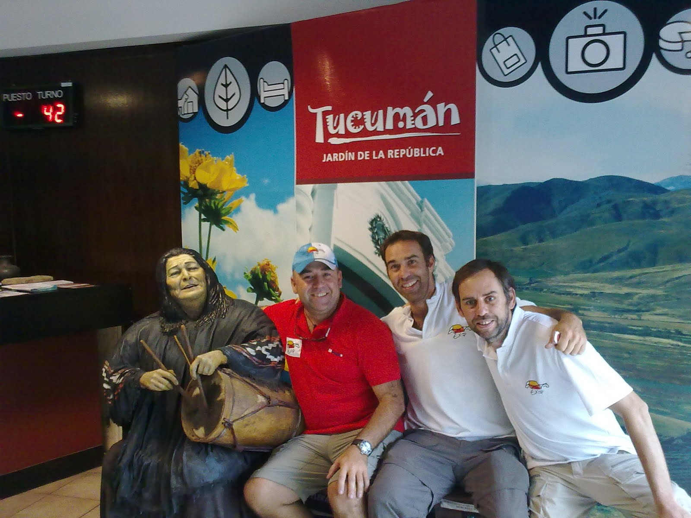
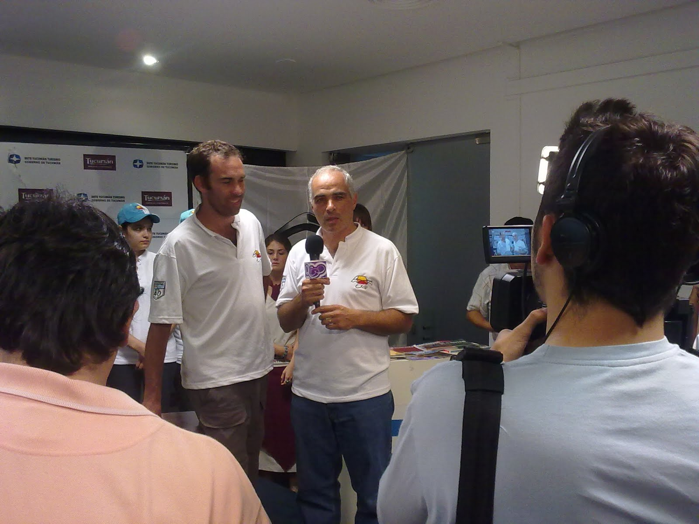
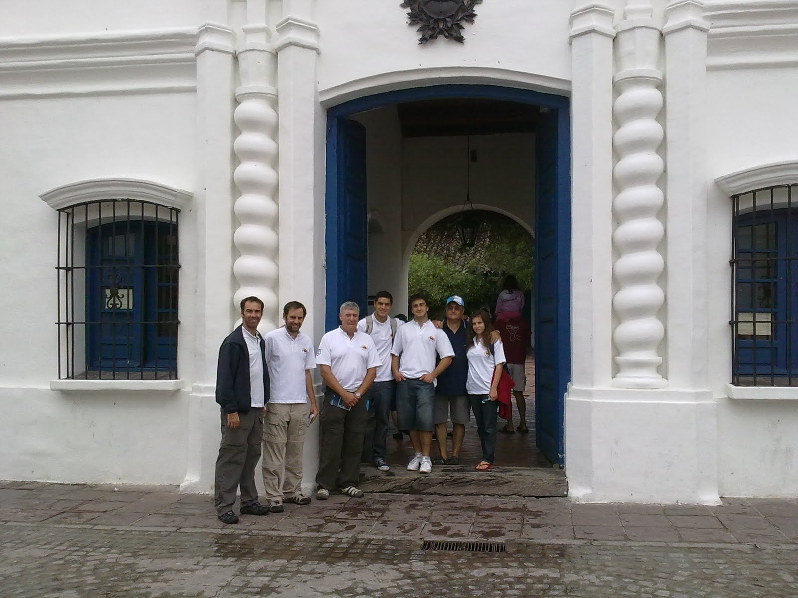
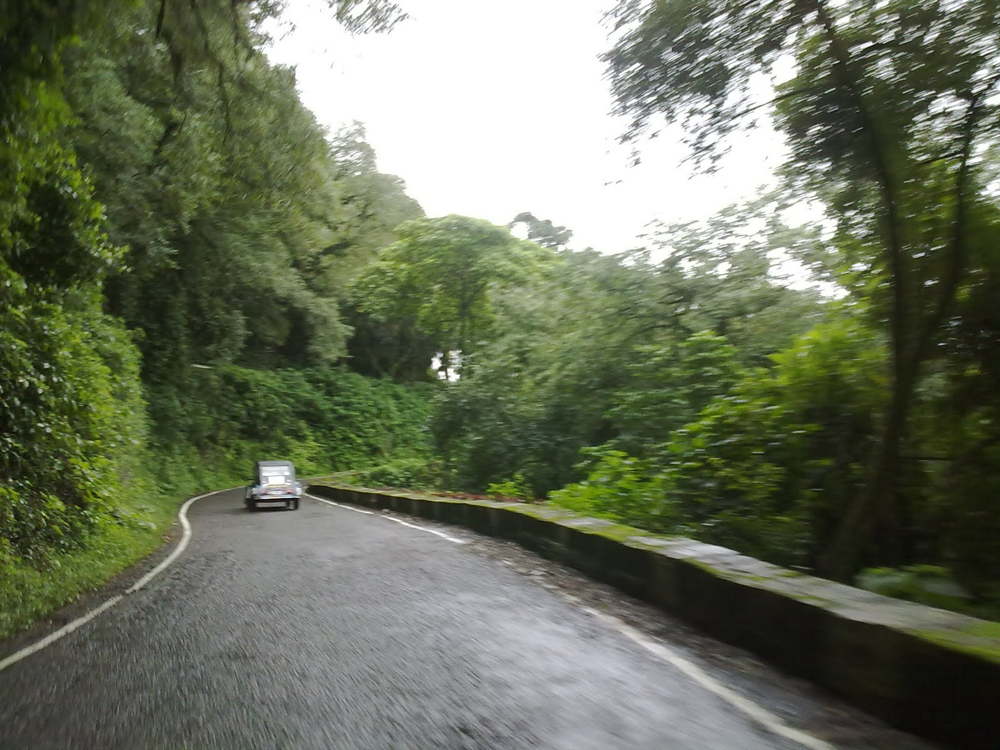

La mañana nos despertó con una tenue lluvia, después de un diluvio por la madrugada.
El equipo se dispuso a preparar los autos, cargar los equipajes y mimarlos con una limpieza extrema, ya que serian las estrellas de los medios tucumanos.

Pilar, la madre de José, nos preparó el desayuno y nos comento sobre las cosas que piensa y también escribe. Esos escritos derrochan tanta simpleza y sabiduria que los comentaremos en un apartado especial .

En la secretaria de Turismo, se desarrolló la conferencia de prensa, que fue presidida por su máxima autoridad, el Sr. Bernardo Racedo Aragon. Las Citronaves se lucieron ante los medios, y muchos curiosos no perdieron oportunidad para fotografiarlas.

Finalizado el evento, fuimos a la Casa de la Independencia, donde tuvimos una guía de lujo que nos personalizó la recorrida.... Gracias!!!!!.
Partiendo desde ahi comenzamos el camino hacia Tafí del Valle, ascendiendo los cerros y contemplando las vistas panorámicas.
¿Cómo se comportaron las máquinas? La trepada los encontró con toda la "polenta" y subieron como los mejores. Ademas nos regalaron la sensación de sentir como techo sobre nuestras cabezas, la exuberante vegetación que domina el paisaje. Impagable!!!!!
La ciudad de Tafí del Valle nos recibió con la última luz del día, y el Grupo se alojó parte en el Hotel Tafí y parte en casa de la Hermana de José.
¿Las empanadas y la humita???.... Riquísimo.
Es todo por ahora....... Seguimos en el camino!!!!
Estimados, esa experiencia por mas narrada, fotografiada y filmada no debe reflejar lo que ustedes sienten al manejar las citronaves... estar en el jardin de la republica, visitar Tafi del Valle y todo el resto que les queda...! IMPAGABLE!! IMBORRABLE PARA SUS MEMORIAS.